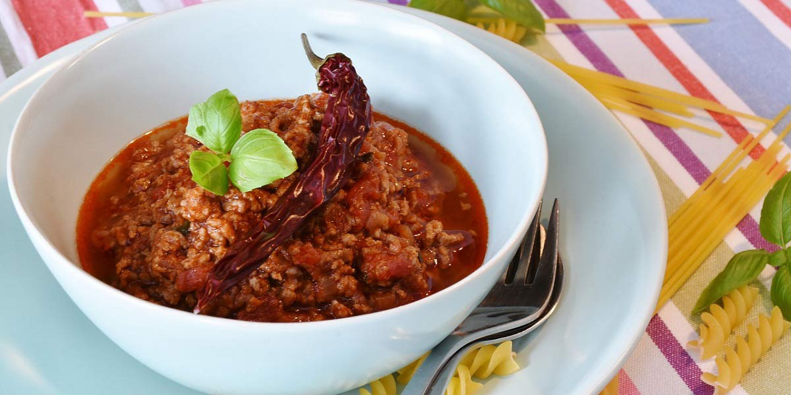

Quorn Bolognese
Recipe Specification
Ingredients List
| Ingredients | Quantity |
|---|---|
| Quorn Mince | 500g |
| Vegetable Oil | 40ml |
| White Onion | 2x1 |
| Carrots | 2x1 |
| Celery | 2 Stalks |
| Garlic Cloves | 2 Cloves |
| Rosemary | 2 Sprig |
| Basil | 40g |
| Tomato Sauce | 750g |
| Vegetable Stock | 150ml |
| Salt & Pepper | To Taste |
Yield: 4-5 portions
Preparation
- Peel and finely dice white onion.
- Peel and crush garlic cloves.
- Peel and finely dice carrot.
- Wash and finely dice celery.
- Pick and finely slice basil leaves.
- Pick and finely chop rosemary leaves.
Cooking Instructions
- Place a large saucepan over a medium/high heat and add the vegetable oil.
- Add onions, carrots, garlic and celery to pan before cooking for 4-5 minutes until vegetables are soft.
- Add quorn mince, tomato sauce and vegetable stock before bring to the boil and reducing to the simmer for 20-25 minutes.
- Add basil and season to taste.

Serving Suggestions
Bolognese are normally served with pasta and parmesan cheese.
Storing instructions
Allow to cool to room temperature. Consume within 4 days of making. Store in the fridge
Reheating Instructions
Place in the microwave for 2-3 minutes.